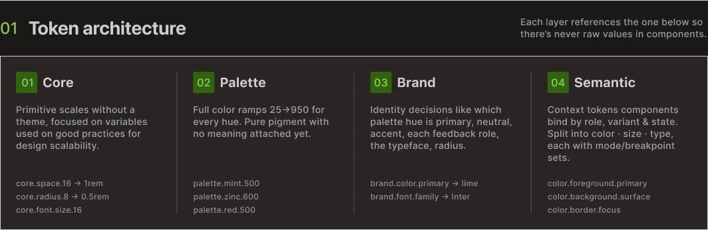
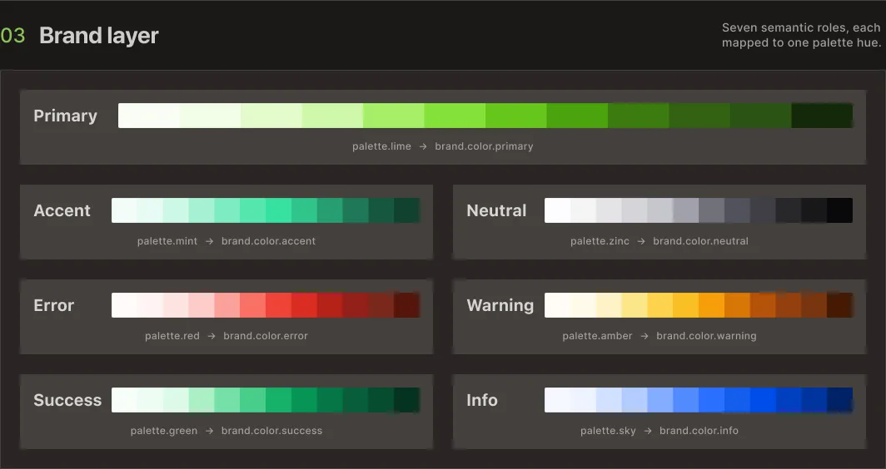
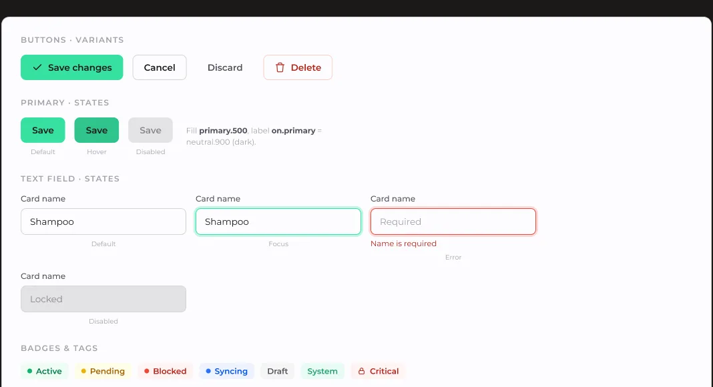
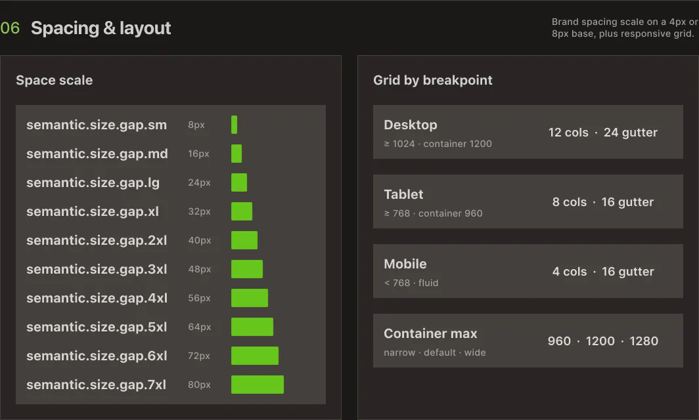

Todo novo cliente começava do mesmo jeito: reconstruindo o que já existia.
Uma arquitetura de tokens para o trabalho da Vellumwire com clientes: quatro camadas, oito ramps de cor, e um processo de re-tematização que toca exatamente uma delas. Refinada sob pressão real durante o projeto Instivo, incluindo uma visão mobile que nunca fez parte do escopo original.
4
camadas · Core, Palette, Brand, Semantic · só uma muda por cliente
8
ramps de cor construídas antes de qualquer cliente existir
1
camada tocada para re-tematizar um projeto: Brand, nada mais

Marca nova significava arquivo em branco, toda vez.
Componentes nunca foram o gargalo. O handoff era.
Cada projeto começava do mesmo jeito. Um novo cliente, uma nova marca, e uma biblioteca de componentes construída de novo a partir de um arquivo em branco. Botões, inputs, cards, o conjunto inteiro, recriado mesmo quando a lógica por trás não tinha mudado nada desde o último projeto.
A repetição não era o custo real. O custo real aparecia no handoff. Cada reconstrução significava uma nova rodada de decisões de nomenclatura para a engenharia interpretar, novos valores de espaçamento para checar contra o último projeto, novos edge cases que ninguém tinha documentado porque ninguém esperava precisar daquele componente de novo.
O problema não era uma biblioteca de componentes faltando. Era uma camada faltando entre componente e marca, algo que deixasse a estrutura fixa enquanto só as decisões voltadas ao cliente se moviam.
No terceiro cliente, o padrão já estava óbvio o suficiente para eu desenhar o sistema em torno dele.
Quatro camadas, e só uma delas pode mudar por cliente.
Core, Palette, Brand e Semantic, cada uma com um único trabalho.
Eu desenhei o sistema para separar o que é estrutural do que é específico de cada cliente.
Core guarda os fundamentos sem nenhum tema atrelado: a grade de espaçamento, a escala tipográfica, valores base de radius. Não muda entre clientes, e não é pra mudar.
Palette guarda ramps de cor completas, construídas antes de qualquer marca ser atribuída. Uma ramp existe independente do que ela vai significar pra um cliente específico.
Brand é onde vivem as decisões do cliente: qual ramp se torna primary, qual se torna neutral, qual se torna accent, e qual tipografia o projeto usa. Essa é a única camada que muda por cliente.
Semantic é o que os componentes de fato leem. Um botão não sabe se o fundo dele é mint ou areia. Ele sabe que é background.primary. Semantic nunca referencia palette ou brand diretamente, e se divide em três dimensões independentes: cor (claro e escuro), tamanho (desktop, tablet, mobile) e tipografia (desktop, tablet, mobile).
Componentes são construídos exclusivamente a partir de tokens semantic. Nenhum valor hex puro, nenhuma referência direta à palette no código do componente, em lugar nenhum. Re-tematizar um projeto significa mudar a camada Brand e nada mais.

Arquitetura de tokens · quatro camadas, cada uma referenciando a de baixo
Ramps de cor existem antes de qualquer cliente existir.
Duas do conjunto completo do sistema, mostradas para ilustrar o padrão.
A palette é construída independente das decisões de marca. Cada ramp vai do seu step mais claro ao mais escuro, estruturada do mesmo jeito independente do tom, de forma que atribuir uma ramp a um papel na camada Brand se torna um exercício de mapeamento em vez de um exercício de design.
O sistema completo hoje roda oito ramps. O que segue são duas delas, incluídas aqui só para demonstrar o padrão.

Mint e Sky · 2 de 8 ramps da paleta completa
Construir ramps antes da atribuição de marca significa que um novo cliente raramente precisa de uma ramp nova. Na maior parte do tempo, o trabalho é escolher qual ramp existente ganha qual papel.
Mesmo mecanismo, todo cliente: uma ramp atribuída a cada papel.
Sete papéis semânticos. Cada um decidido uma vez por projeto, na camada Brand, em nenhum outro lugar.
Essa é a camada que prova que o resto do sistema vale a complexidade dele.
Primary, accent, neutral, e quatro papéis de feedback, error, warning, success, info, são os únicos slots que existem. Cada um é uma única decisão: qual ramp da palette é atribuída a ele. Tome essa decisão uma vez por cliente, e todo componente abaixo já sabe o que desenhar sem ninguém tocar no componente em si.

Camada Brand · sete papéis, cada um mapeado para uma ramp da palette
Uma demo real de troca de marca, o mesmo botão, card e input renderizados sob três marcas de clientes diferentes, segue esse mecanismo idêntico: três ramps diferentes caindo nos mesmos sete papéis, com zero mudanças no código do componente entre elas.
Componentes nunca perguntam qual é a cor de algo. Eles perguntam qual papel ela representa.
Um olhar parcial sobre a camada de token que fica entre brand e componente.
Tokens semantic descrevem função. border.error significa a mesma coisa se a ramp por baixo é vermelha, laranja, ou algo que um cliente insiste ser "mais on-brand que vermelho". Um componente referenciando border.error não precisa saber qual ramp resolveu pra esse papel.
A tabela semantic completa cobre os modos claro e escuro, e vai bem além do que é útil mostrar aqui. Abaixo está uma visão parcial, modo escuro, seis tokens do conjunto completo.

Cor semantic · modo escuro, 6 do conjunto completo de tokens
Os nomes de token em produção são mais específicos do que o mostrado aqui. A estrutura é fiel. A nomenclatura exata não é reproduzida na íntegra.
Botões, tags, inputs, cards. Construídos direto a partir de tokens.
Como a camada semantic se parece quando de fato renderiza alguma coisa.
Botões carregam variantes primary, secondary e destructive, cada uma puxando de tokens semantic de cor e tamanho em vez de valores fixos. Tags usam os mesmos pares de papel de fundo e texto que os botões, só numa escala diferente, o que mantém as cores de status consistentes pelo produto sem ninguém precisar lembrar qual vermelho é o vermelho certo.
Alguns componentes têm mais de uma versão estrutural, além de uma simples variante de estilo. Um botão que precisa disparar uma confirmação em múltiplas etapas se comporta diferente de um botão que envia um formulário, e essa diferença vive no próprio componente, separada de qualquer override de token. Tokens lidam com aparência. Eles nunca foram feitos pra lidar com comportamento, e o sistema não finge o contrário.

Botões, text fields e badges · construídos a partir de tokens semantic, não de valores puros
Valores mobile existiam antes de um cliente pedir mobile.
Tokens semantic de tamanho e tipografia já resolvem por breakpoint.
Tamanho e tipografia semantic são divididos em desktop, tablet e mobile desde o início, independente de um projeto já ter lançado uma visão mobile ou não. Os valores existem mesmo que ninguém tenha olhado pra eles ainda.
Essa decisão foi testada de verdade durante o projeto Instivo, quando a equipe do armazém precisou de uma visão mobile de estoque que não tinha sido parte do escopo original. Nenhum sistema paralelo precisou ser construído. A camada semantic já tinha valores mobile definidos, então a nova visão consumiu os mesmos tokens que o produto desktop usava, só resolvidos contra um breakpoint diferente.
A mesma camada que torna a re-tematização possível também torna o redimensionamento possível. Um cliente perguntou recentemente sobre telas mais densas. Eu troquei a grade base de 8px para 4px num produto onde densidade de informação importava mais que respiro visual. Isso é uma mudança na camada Core sem nenhuma reescrita de componente necessária, o que é mais próximo do teste real de se a arquitetura se sustenta do que a demo de troca de marca é.

Espaçamento e grade · resolvidos por breakpoint, de desktop a mobile
Construído isoladamente. Testado em produção.
O case do Instivo é onde esse sistema parou de ser uma teoria.
Essa arquitetura não foi lançada como algo finalizado e depois usada. Eu refinei essa arquitetura enquanto construía o Instivo, sob o tipo de pressão que pega as lacunas que uma folha em branco nunca pegaria.
A história completa daquele projeto, incluindo a visão mobile de estoque que se tornou o teste real da camada responsiva, está documentada separadamente.
Eu lidero a arquitetura e as decisões de token em todo cliente que roda nesse sistema. O Afonso implementa e hospeda cada build, que é o que prova se uma camada se sustenta: não o diagrama, o site em produção.
Vamos conversar
Tem um projeto?
Vamos fazer acontecer.